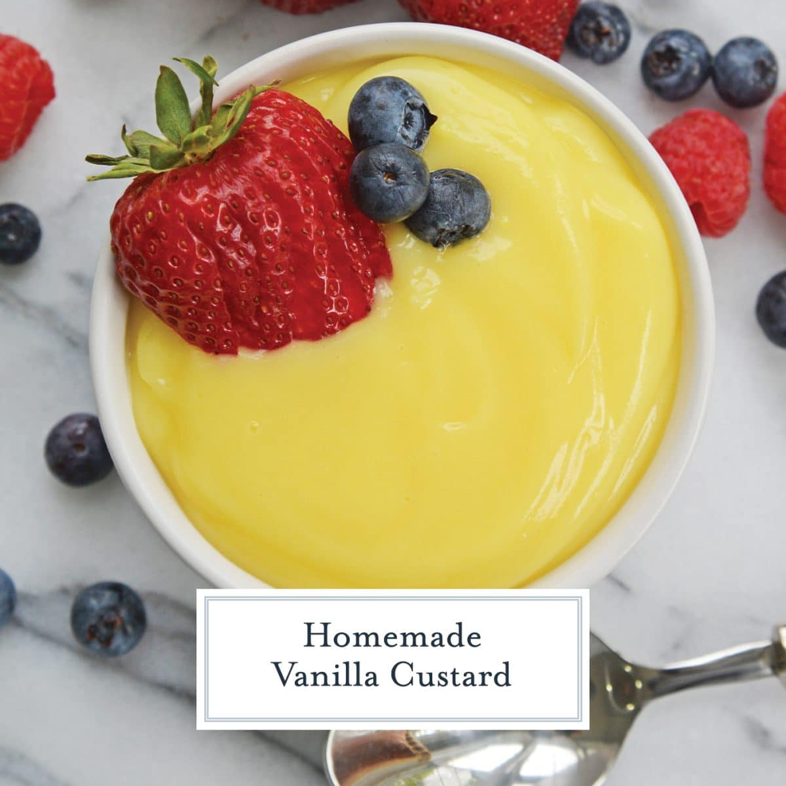

Vanilla Custard

Delicious Vnilla Custard Desert
At its most basic, custard is essentially a liquid thickened by eggs and heat.
This custard uses egg yolks instead of whole eggs and heavy cream in addition to milk, making it smoother and richer.
It’s cooked on the stove, rather than a baked custard, making it similar to a pudding or pastry cream.
All in all, vanilla custard is pretty quick to prepare, just about 30 minutes of hands-on work.
But it is important to keep in mind that it needs at least 3 hours to chill.
It’s a great weekend recipe, or to make ahead during the week.
Ingredients
- Vanilla custard powder
- Milk
- Sugar
- Eggs (Optional)
- Cornstarch
- Salt
Steps
- The egg yolks are whisked into the sugar, cornstarch, and salt in a medium mixing bowl
- Milk and cream are combined in a heavy-bottomed saucepan and brought just to a simmer
- The hot milk is slowly whisked into the egg yolks a splash at a time to temper them
- Then, the custard is poured back into the saucepan to cook again on medium-low heat until thickened
- Once the custard is cooked, you can add extra flavor and richness by whisking in butter and vanilla extract
- To ensure the custard is velvety smooth, it’s poured through a strainer into a large bowl to work out any possible lumps
- Then it's covered with plastic wrap directly on the surface of the custard and cooled before serving